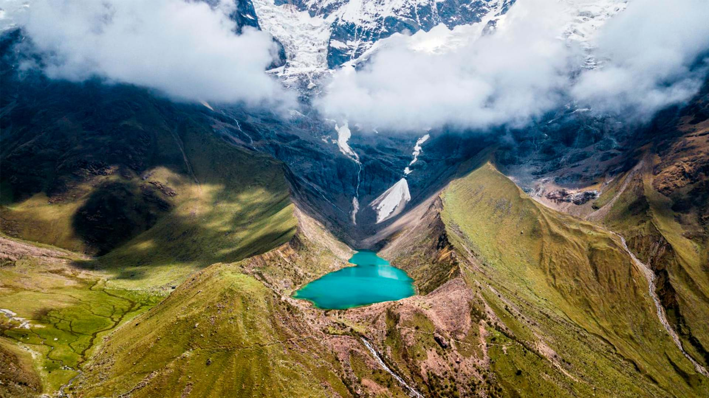
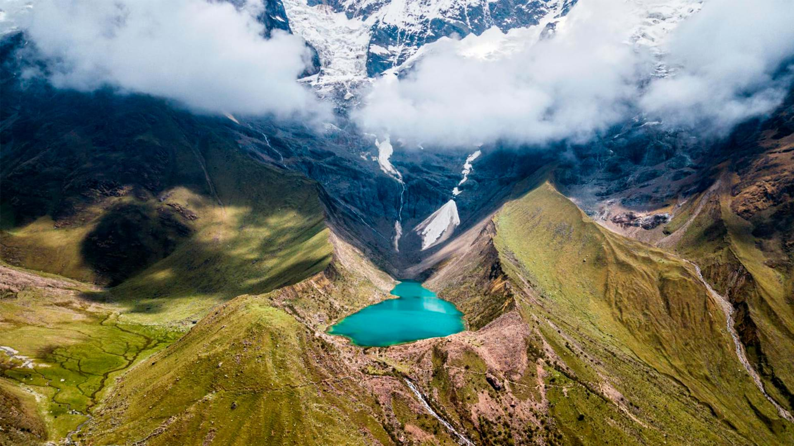

Día 1: Recorrido por la ciudad
Aclimatación a la altitud y visita a sitios arqueológicos: Sacsayhuamán, Q'enqo, Puca Pucara y Tambomachay.
Duración: 4 horas.
Vive una experiencia inolvidable en el corazón de los Andes.
Explora el Itinerario


 

Aclimatación a la altitud y visita a sitios arqueológicos: Sacsayhuamán, Q'enqo, Puca Pucara y Tambomachay.
Duración: 4 horas.
Tour de día completo visitando Chinchero, Maras, Moray, Ollantaytambo, Urubamba y Pisac.
Almuerzo buffet en Urubamba.
Duración: 12 horas.
Excursión de día completo a Vinicunca, la Montaña de Colores.
Opciones de caballos o cuatrimotos (no incluidos). Visita opcional al Valle Rojo.
Viaje en tren turístico a Aguas Calientes y visita guiada a Machu Picchu.
Regreso a Cusco.
Excursión de día completo con caminata a la laguna de Humantay.
Opciones de caballos (no incluidos).

¿Listo para tu aventura? ¡Déjanos un mensaje o contáctanos directamente!